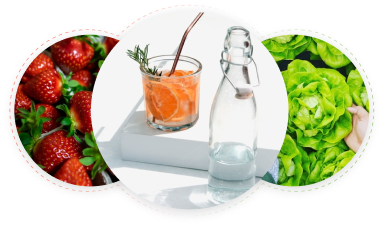
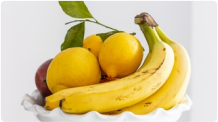
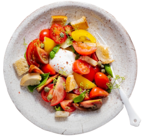

¡No dejes pasar esta Oferta!
ORGANIC FOOD
Lo mejor de una ensalada 100% orgánica en tu mesa, visualiza este producto que contiene vegetales de calidad, producido por manos peruanas.
Envío Gratis
Recibe en rápido este producto. Se aplican terminos y condiciones
Reseñas Positivas
Producto ubicado en los más favoritos de este semana
Recojo en Local
Puedes optar por el recojo en el local del productor

RECETA DEL DÍA
Smoothie de Fresa y Naranja
Ingredientes
- º 8 fresas (preferiblemente orgánicas)
- º 2 naranjas (orgánicas)
- Hielo picado (opcional)
- º 1 kiwi (para decorar, opcional)
Instrucciones
- 1. Lava las frutas: Asegúrate de lavar bien las fresas, ya que suelen contener más pesticidas. Puedes usar agua con un poco de bicarbonato para limpiarlas adecuadamente.
- 2. Prepara las naranjas: Pela las naranjas y córtalas en cuartos.
- 3. Prepara las fresas: Quita la parte verde de las fresas y córtalas en mitades o cuartos.
- 4. Mezcla los ingredientes: En una batidora, añade las fresas, los cuartos de naranja y un poco de hielo picado si deseas una textura más fría y refrescante. Tritura todo hasta que obtengas una mezcla homogénea.
- 5. Sirve y decora: Vierte el smoothie en un vaso. Puedes decorarlo con una rodaja de kiwi o algunas hojas de menta para darle un toque extra.
Este smoothie no solo es delicioso, sino que también es rico en vitaminas, antioxidantes y fibra, lo que lo convierte en una opción saludable para merendar o acompañar tus comidas
Filtra los productos por categoría
Vegetales

Frutas
Otros
Cereales, Menestras, etc.
Regístrate y se parte de la familia TrujiOrganic
